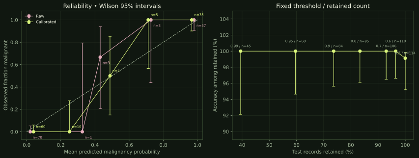

WORKING EXPERIMENT / REPRODUCIBLE BENCHMARK
Confidence is not accuracy.
Probability calibration and selective prediction on a breast-tumor feature benchmark
On one fixed held-out split of the Wisconsin Diagnostic Breast Cancer dataset, sigmoid calibration changed accuracy from 98.25% to 99.12% while worsening Brier score from 0.0121 to 0.0205. The apparent disagreement is the result: class-label accuracy and probability quality measure different things. A preset abstention sweep illustrates the coverage cost of rejecting uncertain predictions without establishing a clinically safe threshold.
1. Question and data
Does post-hoc probability calibration improve a simple classifier, and how does an abstention policy trade retained sample size against observed error? We use 569 released records with 30 numerical features extracted from cell nuclei in fine-needle aspirates. The positive label is malignant; benign is negative. This is classification of pre-extracted features, not mammography, pathology-image interpretation, population screening, or a diagnostic service. The source cohort contains 212 malignant and 357 benign records.
2. Design before evaluation
The seeded stratified split assigns 341 records to training, 114 to calibration, and 114 to testing. StandardScaler and logistic regression (C=1, maximum 3000 iterations) fit only training data. We then freeze the pipeline and fit sigmoid calibration using only the separate calibration subset. We compare calibrated probabilities, original probabilities, and a constant training-prevalence baseline. No model hyperparameter, reliability-bin boundary, or confidence threshold is chosen from test results.

3. Primary result
The primary probability metric is Brier score, the mean squared difference between predicted malignancy probability and the binary outcome. Lower is better. Original-model Brier is 0.0121 (test-row bootstrap 95% interval 0.0046–0.0220), versus 0.0205 (0.0124–0.0300) after calibration. The paired raw-minus-calibrated difference is -0.00840, with interval -0.01245–-0.00463. Calibration worsened this proper scoring rule on this split. It moved one classification to the correct side of 0.5, reducing false negatives from two to one. The AUROC remained 0.9997 because sigmoid calibration preserved the score ranking.
4. Selective prediction
A prediction is retained when max(p, 1−p) meets a fixed threshold; otherwise its label is withheld. The thresholds were 0.50, 0.60, 0.70, 0.80, 0.90, 0.95, and 0.99. For calibrated predictions, threshold 0.80 retained 95 of 114 test records and deferred 19. No errors occurred among those retained, but the sample is finite and selected. This is not evidence of zero population risk. No human review, delay, downstream action, or cost of deferral was evaluated.
| Model | AUROC | Brier | Accuracy | False negatives |
|---|---|---|---|---|
| Original logistic | 0.9997 | 0.0121 | 98.25% | 2 |
| Sigmoid calibrated | 0.9997 | 0.0205 | 99.12% | 1 |
| Training prevalence | 0.5000 | 0.2327 | 63.16% | 42 |
5. Uncertainty and interpretation
Intervals use 2000 seeded test-row bootstrap replicates, paired for the Brier comparison, and Wilson intervals for observed proportions. They condition on the fitted pipeline and this one split; they do not include variation from different training sets. Reliability curves are descriptive and bin-sensitive. The high discrimination score is plausible on this well-known, separable benchmark and must not be generalized to contemporary clinical populations. Independent sigmoid calibration is a method to test, not an automatic upgrade.
6. Limitations and next experiment
One small historic cohort cannot establish screening performance, external validity, clinical safety, or fairness. Site and longitudinal group identifiers are unavailable in the distributed feature table, so no independent site split was possible. A useful next study would freeze the full pipeline, define deferral costs and a clinical workflow, and evaluate on independently collected data. Repeated nested resampling could quantify training variability, but would not replace external validation.
Reproducibility and provenance
Seed 20261113. Numerical outputs are stored in results.json, including split row indices, prediction-level records, dataset hashes, intervals, and environment versions. The source package includes the analysis protocol, fitting code, figure code, this report, and source attribution. Run the supplied commands to reproduce the analysis. Parameters were fixed before evaluation; an independent audit corrected augmentation weights and all-column indicators before interpreting results.
References
- Wolberg et al. Wisconsin Diagnostic Breast Cancer dataset. UCI; 569 records, 30 features. CC BY 4.0.
- Guo et al. On Calibration of Modern Neural Networks. ICML, 2017. General background on probability calibration; our models are logistic, not neural networks.
- scikit-learn. CalibratedClassifierCV documentation: independent calibration with FrozenEstimator.